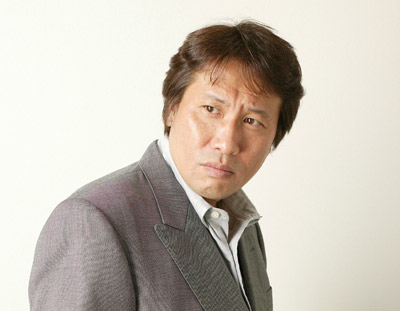

Falaremos agora sobre algumas curiosidades de Saint Seiya
- A história de Os Cavaleiros do Zodíaco (Saint Seiya) foi inspirada na mitologia grega, mas também pega emprestado elementos de outras mitologias, como a nórdica
- A história de Os Cavaleiros do Zodíaco (Saint Seiya) rendeu 28 volumes de mangás. Os 18 primeiros volumes foram adaptados em 114 episódios de anime. Os 10 volumes finais foram adaptados em 31 OVAs
- Com a exportação do anime, Os Cavaleiros do Zodíaco (Saint Seiya) obteve grande sucesso em todo o mundo, mas principalmente na América Latina e na Europa. No Japão, o autor da história, Masami Kurumada, não tem muita fama
- Os Cavaleiros do Zodíaco (Saint Seiya) foi eleita a melhor série de 1987 no Anime Grand Prix

Masami Kurumada, autor e produtor de Saint Seiya